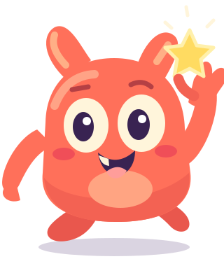

Minha evolução
Acompanhe a evolução do pequeno matemático!
Erros
0Sequência atual
0Recorde
0Questões respondidas0
Percentual de acertos0%
Cada desafio é um passo na sua aventura!
← Voltar ao painel
✦ Dados de demonstração · o progresso ainda não é salvo ✦